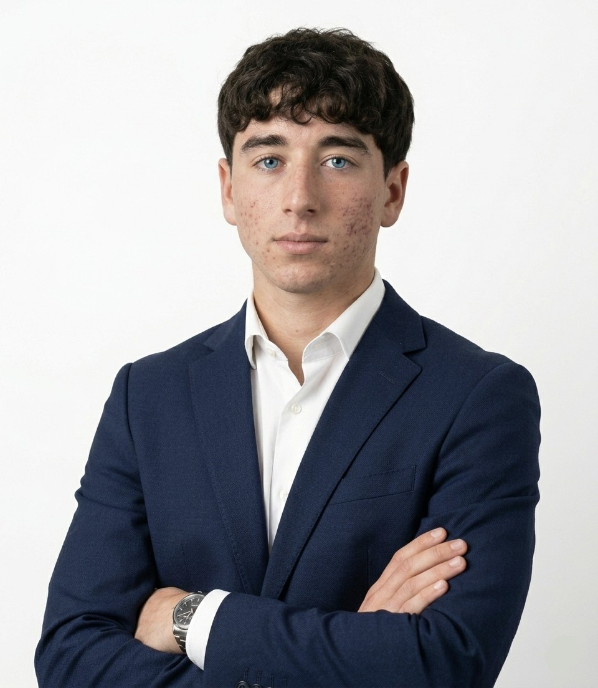
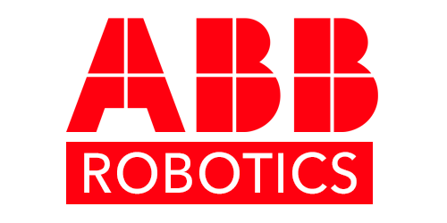
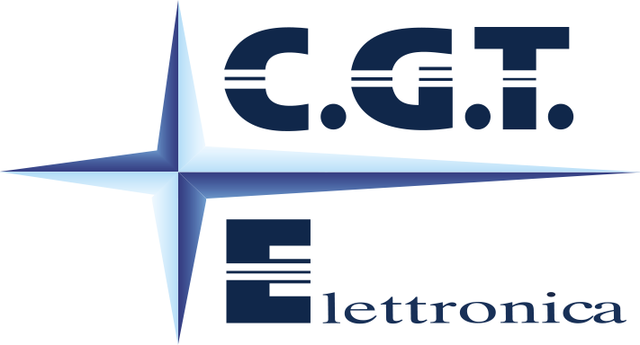

Studente appassionato di tecnologia, automazione e sviluppo software
// Portfolio digitale — formazione tecnica, esperienze e progetti personali
Scopri il mio percorsoChi sono
// Informatica & Elettronica
Una passione nata da subito
Fin da piccolo ho avuto una curiosità inesauribile per tutto ciò che riguarda
l'informatica e l'elettronica. Non mi è mai bastato sapere che le cose funzionano —
ho sempre voluto capire come e perché.
Questa spinta mi ha portato a scegliere un percorso tecnico e a costruire,
nel tempo, competenze reali in programmazione, automazione e sviluppo software.
Viviamo in un momento storico unico: l'intelligenza artificiale sta ridefinendo
profondamente il modo di lavorare, creare e risolvere problemi. Non si tratta
solo di tecnologia — è un cambiamento culturale e sociale che trasformerà
ogni settore nei prossimi anni. Essere curiosi, aggiornarsi continuamente
e saper collaborare con questi strumenti non è più un'opzione: è la competenza
fondamentale del futuro. Ed è esattamente la direzione verso cui sto crescendo.
// Sport & Benessere
Lo sport come stile di vita
Pratico calcio da sempre e lo sport è parte integrante di chi sono. Mi ha insegnato disciplina, spirito di squadra e la capacità di rialzarsi dopo una sconfitta — valori che porto con me anche nello studio e nei progetti. Il benessere fisico e mentale è la mia priorità: un equilibrio sano tra impegno, passione e vita è ciò che mi permette di dare il massimo in tutto quello che faccio.
Formazione
⚙️ Automazione e Controllo
Sistemi Industriali
Studio dei sistemi automatizzati, della logica di controllo e dei fondamenti dei processi industriali applicati a scenari ingegneristici reali.
💻 Programmazione
Sviluppo Software
Programmazione applicata con approcci strutturati e orientati agli oggetti, dal C di basso livello allo scripting con Python.
🖥️ Sistemi Informatici
Reti e Sistemi Operativi
Architettura dei sistemi di calcolo, protocolli di rete, ambienti operativi e nozioni fondamentali di amministrazione di sistema.
🤖 Robotica
Robotica Industriale
Introduzione ai principi della robotica, alla cinematica e agli ambienti di simulazione industriale, con formazione pratica e certificazioni ABB.
Esperienze

Certificazioni ufficiali ABB
Ho conseguito due certificazioni ufficiali rilasciate da ABB per l'utilizzo di RobotStudio, il software leader nel settore per la simulazione e la programmazione offline di robot industriali. Il percorso formativo si è articolato in due livelli progressivi, ciascuno con obiettivi e contenuti distinti.
// Certificazione Base
Il modulo base ha introdotto i fondamenti della simulazione robotica industriale: interfaccia del software, creazione e configurazione di stazioni virtuali, importazione di componenti CAD e programmazione di traiettorie elementari. Ho imparato a muovermi nell'ambiente di lavoro di RobotStudio e a comprendere la struttura logica di un programma robotico.
// Certificazione Advanced
Il modulo avanzato ha approfondito la logica di programmazione RAPID, la gestione degli eventi di sistema, la simulazione di flussi di lavoro industriali complessi e l'ottimizzazione dei percorsi. Questo livello ha permesso di avvicinarsi concretamente alla programmazione robotica applicata a contesti produttivi reali, rafforzando la comprensione del legame tra cinematica teorica e movimento fisico del robot.
// Teoria → Pratica
Le equazioni di cinematica studiate in classe si sono trasformate in movimenti reali del robot all'interno del simulatore — validando la logica di programmazione prima di qualsiasi installazione fisica.
Luglio – Agosto 2024
Ho svolto un'esperienza PCTO presso il Comune di Civita Castellana, un ente pubblico locale che gestisce servizi amministrativi, sociali e tecnici per il territorio. È stata la mia prima esposizione a un ambiente lavorativo strutturato e formale, molto diverso dal contesto scolastico.
// Attività svolte
Ho affiancato il personale degli uffici nell'organizzazione e archiviazione di documenti, nella gestione di pratiche amministrative e nel supporto alle attività operative quotidiane. Ho avuto modo di osservare come i diversi uffici collaborino tra loro e come vengano gestiti i flussi di comunicazione interna.
// Cosa ho imparato
L'esperienza mi ha permesso di sviluppare senso di responsabilità, puntualità e capacità di lavorare all'interno di una struttura organizzativa definita. Ho anche compreso come la digitalizzazione dei processi sia sempre più centrale anche nella pubblica amministrazione, e quanto sia importante la comunicazione chiara in un contesto professionale.

Febbraio · 1 settimana · Viterbo / Roma
Ho effettuato uno stage presso CGT Elettronica, un'azienda operante nel settore dell'elettronica e dei sistemi tecnici, con clientela sia nel territorio di Viterbo che nell'area romana. L'ambiente lavorativo era tecnico e dinamico, con personale specializzato in elettronica applicata e manutenzione di sistemi.
// Attività osservate e svolte
Durante la settimana ho avuto l'opportunità di osservare da vicino i flussi di lavoro tecnici dell'azienda: dalla gestione e diagnosi di componenti elettronici, all'organizzazione delle commesse, fino all'interazione con i clienti in un contesto professionale strutturato. Ho assistito a operazioni di test e verifica su sistemi elettronici, comprendendo come le competenze tecniche si integrino con quelle organizzative in un'azienda reale.
// Cosa ho imparato
L'esperienza mi ha dato una prospettiva concreta su come funziona un'azienda tecnica dall'interno. Ho capito che le competenze acquisite a scuola — elettronica, sistemi, logica — trovano applicazione diretta nel mondo del lavoro, ma richiedono anche capacità trasversali come precisione, attenzione al dettaglio e saper lavorare in team.
2023 – 2025
Partecipazione a diverse attività di orientamento focalizzate su università, percorsi di carriera e opportunità di formazione tecnica — acquisendo consapevolezza dei percorsi accademici in ingegneria e informatica.
Showcase
Sistema prototipale per il rilevamento e il riconoscimento automatico delle targhe automobilistiche tramite tecniche di computer vision. Il sistema elabora un flusso video in ingresso, isola la regione della targa, applica un pre-processing dell'immagine ed estrae il testo alfanumerico tramite OCR.
// La Sfida Tecnica
Le variazioni delle condizioni di illuminazione e l'angolazione delle targhe causavano errori di lettura OCR fino al 40% dei frame in condizioni non ideali.
// La Soluzione
Pipeline di pre-processing con OpenCV: grayscale → adaptive thresholding → operazioni morfologiche → contour detection. Accuratezza finale > 85% in condizioni reali.
[ LPR System — Demo ]
AB · 123 · CD
Video demo del prototipo di riconoscimento targhe tramite OCR.
Sviluppi Futuri
Migliore Pre-processing
Migliorare gli algoritmi per gestire in modo più robusto variazioni di illuminazione, sfocatura, inclinazione e formati di targa non standard.
Maggiore Precisione OCR
Integrare un motore OCR più preciso o addestrare un modello personalizzato per ridurre gli errori su targhe parziali o a basso contrasto.
Ottimizzazione Real-Time
Ottimizzare la pipeline per raggiungere prestazioni real-time stabili su hardware standard, senza accelerazione GPU dedicata.
Contatti
Aperto a collaborazioni, confronti tecnici o semplicemente una chiacchierata su tecnologia e innovazione.